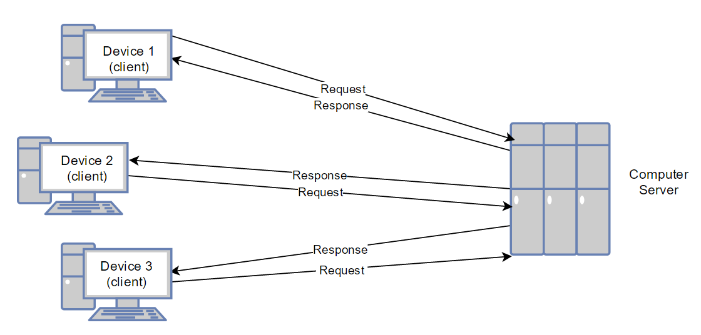

HTTP Request
HTTP stands for Hypertext Transfer Protcol. HTTP is an internet protcol designed to allow communication between clients and servers over a connection. When a client computer connects to a website through an IP address or a domain name in a web browser, their client connection sends a request to the server where the website data is being stored. When the server receives a request they process the information and return a response message to the client.
The content being sent back from the server includes information that will display on the client's web browser. This includes things such as HTML documents and CSS files. Along with the display information, other information such as the date, server information, an ETAG, and some other information is passed to the client.
Data sent over HTTP is done through a TCP/IP connection. Another varient of HTTP is HTTPS which stands for Hypertext Transfer Protcol Secured. HTTPS is similar to HTTP except HTTPS encrypts all communication between the server and your browser. This is used for things such as online purchases and banking information.